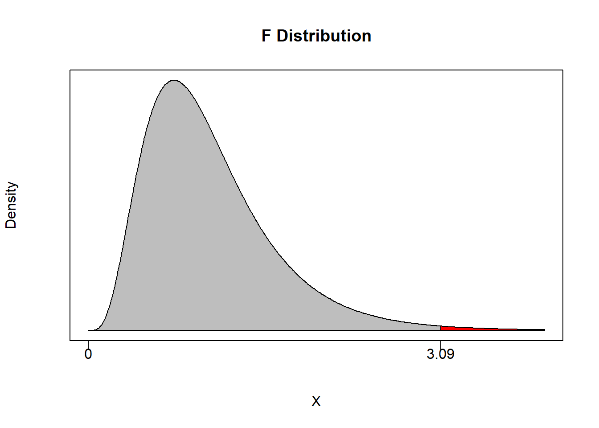

8.5 Joint Hypothesis Tests
8.5.1 Simple versus Joint Tests
We have already considered all there is to know about simple hypothesis tests.
\[H_0: \beta = 0 \quad \text{versus} \quad H_1: \beta \neq 0\]
With the established (one-sided or two-sided) hypotheses, we were able to calculate a p-value and conclude. There is nothing more to it than that.
A simple hypothesis test follows the same constraints as how we interpret single coefficients: all else equal. In particular, when we conduct a simple hypothesis test, we must calculate a test statistic under the null while assuming that all other coefficients are unchanged. This might be fine under some circumstances, but what if we want to test the population values of multiple regression coefficients at the same time? Doing this requires going from simple hypothesis tests to joint hypothesis tests.
Joint hypothesis tests consider a stated null involving multiple PRF coefficients simultaneously. Consider the following general PRF:
\[Y_i = \beta_0 + \beta_1 X_{1i} + \beta_2 X_{2i} + \beta_3 X_{3i} + \varepsilon_i\]
A simple hypothesis test such as
\[H_0: \beta_1 = 0 \quad \text{versus} \quad H_1: \beta_1 \neq 0\]
is conducted under the assumption that \(\beta_2\) and \(\beta_3\) are left to be whatever the data says they should be. In other words, a simple hypothesis test can only address a value for one coefficient at a time while being silent on all others.
A joint hypothesis states a null hypothesis that considers multiple PRF coefficients simultaneously. The statement in the null hypothesis can become quite sophisticated and test some very interesting statements.
For example, we can test if all population coefficients are equal to zero - which explicitly states that none of the independent variables are important.
\[H_0: \beta_1 = \beta_2 = \beta_3 = 0 \quad \text{versus} \quad H_1: \beta_1 \neq 0,\; \beta_2 \neq 0,\; \text{or} \; \beta_3 \neq 0\]
We don’t have to be so extreme and test that just two of the three coefficients are simultaneously zero.
\[H_0: \beta_1 = \beta_3 = 0 \quad \text{versus} \quad H_1: \beta_1 \neq 0\; \text{or} \; \beta_3 \neq 0\]
If we have a specific theory in mind, we could also test if PRF coefficients are simultaneously equal to specific (nonzero) numbers.
\[H_0: \beta_1 = 1 \; \text{or} \; \beta_3 = 4 \quad \text{versus} \quad H_1: \beta_1 \neq 1\; \text{or} \; \beta_3 \neq 4\]
Finally, we can test if PRF coefficients behave according to some relative measures. Instead of stating in the null that coefficients are equal to some specific number, we can state that they are equal (or opposite) to each other or they behave according to some mathematical condition.
\[H_0: \beta_1 = -\beta_3 \quad \text{versus} \quad H_1: \beta_1 \neq -\beta_3\]
\[H_0: \beta_1 + \beta_3 = 1 \quad \text{versus} \quad H_1: \beta_1 + \beta_3 \neq 1\]
\[H_0: \beta_1 + 5\beta_3 = 3 \quad \text{versus} \quad H_1: \beta_1 + 5\beta_3 \neq 3\]
As long as you can state a hypothesis involving multiple PRF coefficients in a linear expression, then we can test the hypothesis using a joint test. There are an infinite number of possibilities, so it is best to give you a couple of concrete examples to establish just how powerful these tests can be.
Application
One chapter of my PhD dissertation concluded with a single joint hypothesis test. The topic I was researching was the Bank-Lending Channel of Monetary Policy Transmission, which is a bunch of jargon dealing with how banks respond to changes in monetary policy established by the Federal Reserve. A paper from 1992 written by Ben Bernanke and Alan Blinder established that aggregate bank lending volume responded to changes in monetary policy (identified as movements in the Federal Funds Rate).15 A simplified version of their model (below) considers the movement in bank lending as the dependent variable and the movement in the Fed Funds Rate (FFR) as the dependent variable.
\[L_i = \beta_0 + \beta_1 FFR_i + \varepsilon_i\]
While this is a simplification of the model actually estimated, you can see that \(\beta_1\) will concisely capture the change in bank lending given an increase in the Fed Funds Rate.
\[\beta_1 = \frac{\Delta L_i}{\Delta FFR_i}\]
Since an increase in the Federal Funds Rate indicates a tightening of monetary policy, the authors proposed a simple hypothesis test to show that an increase in the FFR delivers a decrease in bank lending.
\[H_0:\beta_1 \geq 0 \quad \text{versus} \quad H_1:\beta_1 < 0\]
Their 1992 paper rejects the null hypothesis above, which gave them empirical evidence that bank lending responds to monetary policy changes. The bank lending channel was established!
My dissertation tested an implicit assumption of their model: symmetry.
\[\beta_1 = \frac{\Delta L_i}{\Delta FFR_i}\]
The interpretation of the slope of this regression works for both increases and decreases in the Fed Funds Rate. Assuming that \(\beta_1 <0\), a one-unit increase in the FFR will deliver an expected decline of \(\beta_1\) units of lending on average. However, it also states that a one-unit decrease in the FFR will deliver an expected increase of \(\beta_1\) units of lending on average. This symmetry is baked into the model. The only way we can explicitly test this assumption is to extend the model and perform a joint hypothesis test.
Suppose we separated the FFR variable into increases in the interest rate and decreases in the interest rate.
\[FFR_i^+ = FFR_i >0 \quad \text{(zero otherwise)}\] \[FFR_i^- = FFR_i <0 \quad \text{(zero otherwise)}\]
If we were to put both of these variables into a similar regression, then we could separate the change in lending from increases and decreases in the interest rate.
\[L_i = \beta_0 + \beta_1 FFR_i^+ + \beta_2 FFR_i^- + \varepsilon_i\]
\[\beta_1 = \frac{\Delta L_i}{\Delta FFR_i^+}, \quad \beta_2 = \frac{\Delta L_i}{\Delta FFR_i^-}\]
Notice that both \(\beta_1\) and \(\beta_2\) are still hypothesized to be negative numbers. However, the first model imposed the assumption that they were the same negative number while this model allows them to be different. We can therefore test the hypothesis that they are the same number by performing the following joint hypothesis:
\[H_0: \beta_1=\beta_2 \quad \text{versus} \quad H_1: \beta_1 \neq \beta_2\]
In case you were curious, the null hypothesis get rejected and this provides evidence that the bank lending channel is indeed asymmetric. This implies that banks respond more to monetary tightenings than monetary expansions, which should make sense given all of the low amounts of bank lending in the post-global recession of 2008 despite interest rates being at all time lows.
Conducting a Joint Hypothesis Test
A joint hypothesis test involves four steps:
Estimate an unrestricted model
Impose the null hypothesis and estimate a restricted model
Construct a test statistic under the null
Determine a p-value and conclude
1. Estimate an Unrestricted Model
An analysis begins with a regression model that can adequately capture what you are setting out to uncover. In general terms, this is a model that doesn’t impose any serious assumptions on the way the world works so you can adequately test these assumptions. Suppose we have a hypothesis that two independent variables impact a dependent variable by the same quantitative degree. In that case, we need a model that does not impose this hypothesis.
\[Y_i = \beta_0 + \beta_1 X_{1i} + \beta_2 X_{2i} + \varepsilon_i\]
The model above allows for the two independent variables to impact the dependent variable in whatever way the data sees fit. Since there is no imposition of the hypothesis on the model, or no restriction that the hypothesis be obeyed, then this model is called the unrestricted model.
2. Estimate a Restricted Model
A restricted model involves both the unrestricted model and the null hypothesis. If we wanted to test if the two slope hypotheses were the same, then our joint hypothesis is just like the one in the previous example:
\[H_0:\beta_1=\beta_2 \quad \text{versus} \quad H_1:\beta_1 \neq \beta_2\]
With the null hypothesis established, we now need to construct a restricted model which results from imposing the null hypothesis on the unrestricted model. In particular, staring with the unrestricted model and substituting the null, we get the following:
\[Y_i = \beta_0 + \beta_1 X_{1i} + \beta_2 X_{2i} + \varepsilon_i\]
\[Y_i = \beta_0 + \beta_2 X_{1i} + \beta_2 X_{2i} + \varepsilon_i\]
\[Y_i = \beta_0 + \beta_2 (X_{1i} + X_{2i}) + \varepsilon_i\]
\[Y_i = \beta_0 + \beta_2 \tilde{X}_{i} + \varepsilon_i \quad \text{where} \quad \tilde{X}_{i} = X_{1i} + X_{2i}\]
Imposing the null hypothesis restricts the two slope coefficients to be identical. If we construct the new variable \(\tilde{X}_i\) according to how the model dictates, then we can use the new variable to estimate the restricted model.
3. Construct a test statistic under the null
Now that we have our unrestricted and restricted models estimated, the only two things we need from them are the \(R^2\) values from each. We will denote the \(R^2\) from the unrestricted model as the unrestricted \(R^2\) or \(R^2_u\), and the \(R^2\) from the restricted model as the restricted \(R^2\) or \(R^2_r\).
These two pieces of information are used with two degrees of freedom measures to construct a test statistic under the null - which is conceptually similar to how we perform simple hypothesis tests. However, while simple hypothesis tests are performed assuming a Student’s t distribution, joint hypothesis tests are performed assuming an entirely new distribution: An F distribution.
Roughly speaking, an F distribution arises from taking the square of a t distribution. Since simple hypothesis tests deal with t distributions, and the joint hypothesis deals with \(R^2\) values, you get the general idea. An F-statistic under the null is given by
\[F=\frac{(R^2_u - R^2_r)/m}{(1-R^2_u)/(n-k-1)} \sim F_{m,\;n-k-1}\]
where
\(R^2_u\) is the unrestricted \(R^2\) - the \(R^2\) from the unrestricted model.
\(R^2_r\) is the restricted \(R^2\) - the \(R^2\) from the restricted model.
\(m\) is the numerator degrees of freedom - the number of restrictions imposed on the restricted model. In other words, count up the number of equal signs in the null hypothesis.
\(n-k-1\) is the denominator degrees of freedom - this is the degrees of freedom for a simple hypothesis test performed on the unrestricted model.
In simple hypothesis tests, we constructed a t-statistic that is presumably drawn from a t-distribution. We are essentially doing the same thing here by constructing a F-statistic that is presumably drawn from a F-distribution.

The F-distribution has a few conceptual properties we should discuss.
An F statistic is restricted to be non-negative.
This should make sense because the expressions in both the numerator and denominator of our F-statistic calculation are both going to be non-negative. The numerator is always going to be non-negative because \(R^2_u \geq R^2_r\). In other words, the unrestricted model will always explain more or at least as much of the variation in the dependent variable as the restricted model does. When the two models explain the same amount of variation, then the \(R^2\) values are the same and the numerator is zero. When the two models explain different amounts of variation, then this means that the restriction prevents the model from explaining as much of the variation in the dependent variable it otherwise would when not being restricted.
The Rejection Region is Always in the Right Tail
If we have \(R^2_u = R^2_r\), then this implies that the restricted model and the unrestricted model are explaining the same amount of variation in the dependent variable. Think hard about what this is saying. If both models have the same \(R^2\), then they are essentially the same model. One model is unrestricted meaning it can choose any values for coefficients it sees fit. The other model is restricted meaning we are forcing it to follow whatever is specified in the null. If these two models are the same, then the restriction doesn’t matter. In other words, the model is choosing the values under the null whether or not we are imposing the null. If that is the case, then the f-statistic will be equal to or close to zero.
If we have \(R^2_u > R^2_r\), then this implies that the restriction imposed by the null hypothesis is hampering the model from explaining as much of the volatility in the dependent variable than it otherwise would have. The more \(R^2_u > R^2_r\), the more \(F>0\). Once this F-statistic under the null becomes large enough, we reject the null. This means that the difference between the unrestricted and restricted models is so large that we have evidence to state that the null hypothesis is simply not going on in the data. This implies that the rejection region is always in the right tail, and the p-value is always calculated from the right as well.
4. Determine a P-value and Conclude
Again, we establish a confidence level \(\alpha\) as we would with any hypothesis test. This delivers an acceptable probability of a type I error and breaks the distribution into a rejection region and a non-rejection region.
For example, suppose you set \(\alpha = 0.05\) and have \(m=2\) and \(n-k-1 = 100\). This means that the non-rejection region will take up 95% of the area of the F-distribution with 2 and 100 degrees of freedom.
(Fcrit <- qf(0.95,2,100))## [1] 3.087296If an F-statistic is greater than 3.09 then we can reject the null of the joint hypothesis with at least 95% confidence.

As in any hypothesis test, we can also calculate a p-value. This will deliver the maximum confidence level at which we can reject the null.
pf(q, df1, df2, lower.tail = TRUE)Notice that since the probability is calculated from the left by default (like the other commands), we can use the above code to automatically calculate \(1-p\).
8.5.2 Applications
Lets consider two applications. The first application is not terribly interesting, but it will illustrate a joint hypothesis test that is always provided to you free of charge with any set of regression results. The second application is more involved and delivers the true importance of joint tests.
Application 1: A wage application
This is the same scenario we considered for the dummy variable section, only without gender as a variable.
Suppose you are a consultant hired by a firm to help determine the underlying features of the current wage structure for their employees. You want to understand why some wage rates are different from others. Let our dependent variable be wage (the hourly wage of an individual employee) and the independent variables be given by…
educ be the total years of education of an individual employee
exper be the total years of experience an individual employee had prior to starting with the company
tenure is the number of years an employee has been working with the firm.
The resulting PRF is given by…
\[wage_i=\beta_0+\beta_1educ_i+\beta_2exper_i+\beta_3tenure_i+\varepsilon_i\]
Suppose we wanted to test that none of these independent variables help explain movements in wages, so the resulting joint hypothesis would be
\[H_0: \beta_1 = \beta_2 = \beta_3 = 0 \quad \text{versus} \quad H_1: \beta_1 \neq 0, \; \beta_2 \neq 0, \; \text{or} \; \beta_3 \neq 0\]
The unrestricted model is one where each of the coefficients can be whatever number the data wants them to be.
data(wage1, package = "wooldridge")
UREG <- lm(wage~educ+exper+tenure,data=wage1)
(R2u <- summary(UREG)$r.squared)## [1] 0.3064224Our unrestricted model can explain roughly 30% of the variation in wages.
The next step is to estimate the restricted model - the model with the null hypothesis imposed. In this case you will notice that setting all slope coefficients to zero results in a rather strange looking model:
\[wage_i=\beta_0+\varepsilon_i\]
This model contains no independent variables. If you were to estimate this model, then the intercept term would return the average wage in the data and the error term will simply be every deviation from the individual wage observations with it’s average value. Since it is impossible for the deterministic component of this model to explain any of the variation in wages, then this implies that the restricted \(R^2\) is zero by definition. Note that this is only a special case because of what the restricted model looks like. There will be more interesting cases where the restricted \(R^2\) will need to be determined by estimating a restricted model.
R2r <- 0 # By definitionNow that we have the restricted and unrestricted \(R^2\), we need the degrees of freedom to calculate an F-statistic under the null. The numerator degrees of freedom \((m)\) denotes how many restrictions we placed on the restricted model. Since the null hypothesis sets all three slope coefficients to zero, we consider this to be 3 restrictions. The denominator degrees of freedom \((n-k-1)\) is taken directly from the unrestricted model. Since \(n=526\) and we originally had 3 independent variables (\(k=3\)), the denominator degrees of freedom is \(n-k-1=522\). We can now calculate our F statistic under the null as well as our p-value.
m = 3; n = 526; k = 3
(Fstat <- ((R2u - R2r)/m)/((1-R2u)/(n-k-1)))## [1] 76.87317(Pval <- pf(Fstat,m,n-k-1,lower.tail = FALSE))## [1] 3.405862e-41(1-Pval)## [1] 1Note that since our F-statistic is far from 0, we can reject the null with approximately 100% confidence (i.e. the p-value is essentially zero).
What can we conclude from this?
Since we rejected the null hypothesis, that means we have statistical evidence that the alternative hypothesis is true. However, take a look at the what the alternative hypothesis actually says. It says that at least one of the population coefficients are statistically different from zero. It doesn’t say which ones. It doesn’t say how many. That’s it…
Is there a short cut?
Remember that all regression results provide the simple hypothesis that each slope coefficient is equal to zero.
\[H_0: \beta=0 \quad \text{versus} \quad H_1: \beta \neq 0\]
All regression results also provide the joint hypothesis that all slope coefficients are equal to zero. You can see the result at the bottom of the summary page. The last line delivers the same F-statistic we calculated above as well as a p-value that is essentially zero.
Note that while this uninteresting joint hypothesis test is done by default. Other joint tests require a bit more work.
summary(UREG)##
## Call:
## lm(formula = wage ~ educ + exper + tenure, data = wage1)
##
## Residuals:
## Min 1Q Median 3Q Max
## -7.6068 -1.7747 -0.6279 1.1969 14.6536
##
## Coefficients:
## Estimate Std. Error t value Pr(>|t|)
## (Intercept) -2.87273 0.72896 -3.941 9.22e-05 ***
## educ 0.59897 0.05128 11.679 < 2e-16 ***
## exper 0.02234 0.01206 1.853 0.0645 .
## tenure 0.16927 0.02164 7.820 2.93e-14 ***
## ---
## Signif. codes: 0 '***' 0.001 '**' 0.01 '*' 0.05 '.' 0.1 ' ' 1
##
## Residual standard error: 3.084 on 522 degrees of freedom
## Multiple R-squared: 0.3064, Adjusted R-squared: 0.3024
## F-statistic: 76.87 on 3 and 522 DF, p-value: < 2.2e-16Application 2: Constant Returns to Scale
Suppose you have data on the Gross Domestic Product (GDP) of a country as well as observations on two aggregate inputs of production: the nation’s capital stock (K) and aggregate labor supply (L). One popular regression to run in growth economics is to see if a nation’s aggregate production function possesses constant returns to scale. If it does, then if you scale up a nation’s inputs by a particular percentage, then you will get the exact same percentage increase in output (i.e., double the inputs results in double the outputs). This has implications for what the size an economy should be, but we won’t get into those details now.
The PRF is given by
\[lnGDP_i = \beta_0 + \beta_K \;lnK_i + \beta_L \;lnL_i + \varepsilon_i\]
where
\(lnGDP_i\) is an observation of total output
\(lnK_i\) is an observation of total capital stock
\(lnL_i\) is an observation of total labor stock.
These variables are actually in logs, but we will ignore that for now.
If we are testing for constant returns to scale, then we want to show that increasing all of the inputs by a certain amount will result in the same increase in output. Technical issues aside, this results in the following null hypothesis for a joint test:
\[H_0: \beta_K + \beta_L = 1 \quad \text{versus} \quad H_1: \beta_K + \beta_L \neq 1\]
We now have all we need to test for CRS:
# Load data...
library(readxl)
CDdata <- read_excel("data/CDdata.xlsx")
# Run unrestricted model, get R^2...
UREG <- lm(lnGDP ~ lnK + lnL, data = CDdata)
(R2u <- summary(UREG)$r.squared)## [1] 0.9574247The unrestricted model can explain around 96% of the variation in the dependent variable. For us to determine how much the restricted model can explain, we first need to see exactly what the restriction does to our model. Starting from the unrestricted model, imposing the restriction delivers the following:
\[lnGDP_i = \beta_0 + \beta_K \; lnK_i + \beta_L \; lnL_i + \varepsilon_i\] \[lnGDP_i = \beta_0 + (1 - \beta_L) \; lnK_i + \beta_L \; lnL_i + \varepsilon_i\]
\[(lnGDP_i - lnK_i) = \beta_0 + \beta_L \; (lnL_i - lnK_i) + \varepsilon_i\] \[\tilde{Y}_i = \beta_0 + \beta_L \; \tilde{X}_i + \varepsilon_i\] where \[\tilde{Y}_i=lnGDP_i - lnK_i \quad \text{and} \quad \tilde{X}_i=lnL_i - lnK_i\]
Notice how these derivations deliver exactly how the variables of the model need to be transformed and what the restricted model needs to be estimated.
Y = CDdata$lnGDP - CDdata$lnK
X = CDdata$lnL - CDdata$lnK
RREG <- lm(Y~X)
(R2r <- summary(RREG)$r.squared)## [1] 0.9370283The restricted model can explain roughly 94% of the variation in the dependent variable. To see if this reduction in \(R^2\) is enough to reject the null hypothesis, we need to calculate an F-statistic. The numerator degrees of freedom is \(m=1\) because there is technically only one restriction in the null. The denominator degrees of freedom uses \(n=24\) and \(k=2\).
m = 1; n = 24; k = 2
(Fstat <- ((R2u - R2r)/m)/((1-R2u)/(n-k-1)))## [1] 10.0604(Pval <- pf(Fstat,m,n-k-1,lower.tail = FALSE))## [1] 0.004594084(1-Pval)## [1] 0.9954059As in the previous application, we received a very high F-statistic and a very low p-value. This means we reject the hypothesis that this country has an aggregate production function that exhibits constant returns to scale with slightly over 99.5% confidence.
Bernanke, B., & Blinder, A. (1992). The Federal Funds Rate and the Channels of Monetary Transmission. The American Economic Review, 82(4), 901-921.↩︎